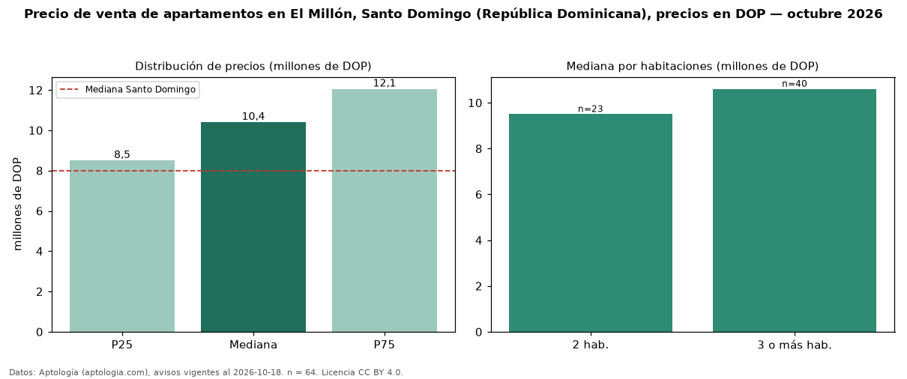

Precio de venta de apartamentos en El Millón, Santo Domingo (República Dominicana), precios en DOP — octubre 2026
Con 64 avisos vigentes, el precio mediano de apartamentos en venta en El Millón, Santo Domingo (República Dominicana) es DOP 10,40 millones. Frente a la mediana de Santo Domingo para apartamentos (DOP 8,00 millones), queda 30 % por encima. Por metro cuadrado, la mediana es DOP 74.790/m² (n = 53 avisos con área), 15 % por encima de Santo Domingo (DOP 65.029/m²). El área mediana anunciada es 140 m². El segmento con más oferta es el de 3 o más habitaciones (40 avisos, mediana DOP 10,60 millones); pasar de 2 habitaciones a 3 o más habitaciones cambia la mediana +12 %. Por precio mediano es el puesto 4 de 6 sectores de Santo Domingo con al menos 30 avisos de apartamentos en venta (DOP): en la franja media. La mitad central de los avisos va de DOP 8,50 millones a DOP 12,05 millones (razón 1,4), una dispersión moderada. Datos: Aptología (aptologia.com), CC BY 4.0 — https://www.aptologia.com/do/venta/santo-domingo/el-millon. Archivos: PDF, CSV con las cifras y gráfica PNG.

| Avisos únicos | 64 |
|---|---|
| Percentil 25 | COP 8.500.000 |
| Mediana | COP 10.400.000 |
| Percentil 75 | COP 12.050.000 |
| Mediana por m² | COP 74.789 |
Fuente: avisos vigentes de portales inmobiliarios recopilados por Aptología, deduplicados (mínimo 30 avisos únicos por celda). Precios pedidos, no cerrados. Fecha: 2026-10-18.